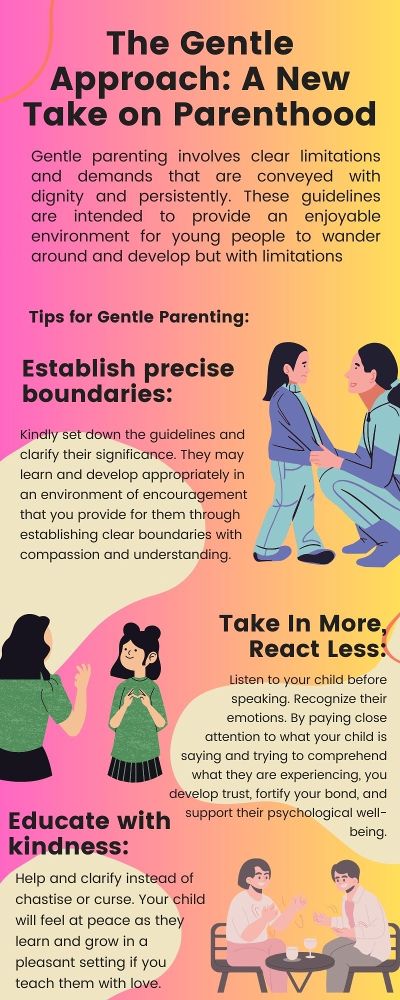

A second-year student studying BS Technology Communication Management at the University of Science and Technology of Southern Philippines. All submissions here are uploaded via our Google classroom platform, exclusively for educational purposes.
Contact MeAs a sophomore navigating the complicated waters of growing up, I've discovered a fascinating belief that continues to shake up the field of parenting world: gentle parenting. It promotes respect and empathy between parents and children rather than severe regulations and repercussions.

As a sophomore navigating the complicated waters of growing up, I've discovered a fascinating belief that continues to shake up the field of parenting world: gentle parenting. It promotes respect and empathy between parents and children rather than severe regulations and repercussions.
As a sophomore navigating the complicated waters of growing up, I've discovered a fascinating belief that continues to shake up the field of parenting world: gentle parenting. It promotes respect and empathy between parents and children rather than severe regulations and repercussions.
The basic foundations of gentle parenting are compassion, respect, knowing, and limits. so what's not to like?
Gentle parenting involves clear limitations and demands that are conveyed with dignity and persistently. These guidelines are intended to provide an enjoyable environment for young people to wander around and develop but with limitations
How would it Work?
1. Pleasant Encouragement: Rather than merely observing when children break the rules, gentle parents continually seek out chances to praise and acknowledge beneficial conduct. This may be as straightforward as saying "thank you" when a child purifies up their playthings without prompting. Devoid of using punishment, gentle parenting focuses on positive reinforcement. It includes complimenting and appreciating positive conduct in order to motivate it to keep going.
2. Creating Direct Limitations: Parents communicate rules gently and regularly, allowing children to grasp responsibilities and outcomes. Gentle parents demonstrate their standards and regulations simply and softly. They clarify the explanations for limits in appropriate for your age methods, allowing kids to fully understand the significance of particular actions.
3. Gentle Discipline: Management in children's lives focuses on educating and leading instead of demanding. Every disciplinary moment presents an opportunity for growth and education. Gentle parents use failures or disobedience as opportunities to teach their children about sympathy, accountability, and the importance of making more educated choices in their adult lives.
Embrace the gentle parenting movement.
Let's collaborate in order to promote the news about compassionate parenting—it's wonderful for loved ones! Consider homes in which everybody is appreciated and listened to. Collectively, we are capable of making the universe greater, one family at a moment.
Understand that caring parental guidance doesn't seem about perfectionism. It involves trying everything we can to comprehend and flourish collaboratively. Let's get started explore it and see how it improves the lives of our families happiness!
In recent years, the Philippines has seen great advances in LGBTQ+ rights, heralding in an exciting time of tolerance and equality. Despite these improvements, the fight against prejudice, especially toward transgender people, is a key and multidimensional issue that affects many sectors of Filipino culture.
In a society entrenched in history and social conventions, transgender people can encounter particular obstacles arising from accepted standards and gender boundaries. The rigorous conformity to established gender standards and preconceived notions contributes to inequality while obstructing development toward more acceptance as well as comprehension.
I saw in an article saying:
“When I was in high school, there was a teacher who always went around and if you had long hair, she would call you up to the front of the class and cut your hair in front of the students. That happened to me many times. It made me feel terrible: I cried because I saw my classmates watching me getting my hair cut.”
(https://www.hrw.org/report/2017/06/22/just-let-us-be/discrimination-against-lgbt-students-philippines)
The aforementioned constraints present substantial obstacles for transgender students, who tend to be forced to adhere to the race chosen for individuals at conception despite receiving acknowledgment by their genuine choice of gender. Yet, such constraints can be complicated for learners who consider as not of a gender, given that they might experience restrictions in asserting their opinions or partaking in tasks that are judged incorrect in light of societal standards of their gender of choice.
Regardless of the obstacles that they encounter, transgender people in the Philippines show excellent strength and bravery, pertaining to customs of culture and campaigning for reform. They provide compelling reflections of the value of friendship, compassion, and united effort in the battle over unfairness and prejudice.
In the maze of existence, in spite of its constant uncertainty and endless behavior, you'll find a haven that surpasses the confines of buildings and concrete. It's something where a person's authority comes from, where one's inner being finds comfort, and that's where one's inner being feels at home. This safety, but this safe place, is more than just a physical location; it takes the shape of somebody.
When individuals think of "home," they believe it's considering where you live. Yet, this is rarely the circumstance. Despite all of the chaos in my family, becoming at our place never seemed like home.
Home is the place where you feel at ease and guarded. An environment that provides warmth, a place which makes you feel at peace and relaxed.
Home has a stronger than just a location; it is someone's life. It's the person who understands without passing judgment, lends a shoulder to depend on, and appreciates your happy and sad times. It's where you can find your courage, and you can be oneself with no pretend or discomfort.
In a society where one's way of existence is swift and the pressures are pervasive the worth of gaining consolation in relationships with others shouldn't be stressed. The loving embrace of someone we care about provides us with the power we need to weather the process of hurricanes, the fortitude to face our anxieties, and an ability to rise again after every tumble.
Ubos sa Task Force ELCAC, ang 4th Infantry (Diamond) Division nakigtambayayong sa dugang mga departamento sa gobyerno aron mapahinabo ang dili kalikayan nga pagkahugno sa communist terrorist group (CTG) sa Caraga ug Northern Mindanao provinces. sulod sa miaging duha ka dekada.
Ang bag-o lang natudlo nga 4ID Ang lider, si Maj. Gen. Jose Maria R. Cuerpo II, nagbutyag sa nagpadayong pakigsangka sa CTG ug gitagna ang hingpit nga kadaugan sa 2023. Walo ka mga prenteng gerilya sa CTG, usa ka komite sa sub-rehiyon, ug usa ka autonomous platun ang hingpit na gipuo sukad sa tuig dose beinte uno (2021). Ang mga lokal mas nalambigit sa mga inisyatibo nga nagpasiugda sa kalig-on ug pag-uswag sa ekonomiya tungod kay sila nabusog sa panglimbong ug pagsulod sa CTG.
Ang mga indibiduwal gikan sa mga rehiyonal nga organisasyon sa amihanang-sidlakan ug amihanang sentral Mindanao, nga miapil sa daghang bayolenteng mga krimen niining mga rehiyona, nalakip sa bag-o lang nabungkag nga mga grupo. Si Heneral Cuerpo II mideklarar, "Ang katawhan gikapoy na ug nabusog na sa pangilad ug pagpahimulos sa CTG." Gipasiugda niya kung giunsa ang mga katuyoan sa komunidad nabalhin gikan sa dili pagsinabtanay ngadto sa seguridad ug mga proyekto sa pagpalambo sa kinabuhi. 362 ka mga panagbangi ang miresulta gikan sa mga paningkamot sa gobyerno, 885 ka CPP-NPA nga mga terorista ang na-neutralize, ug 766 ka mga armas ang na-recover o na-turn in. Usab, sumala sa mga awtoridad sa gobyerno, 234 ka CTG hideouts ang nakuha. Niadtong Marso 27, duha ka rebelde ang napatay sa San Juan, Bayugan City, human sa pinusilay sa mga awtoridad sa gobyerno.
Created By MCG | All Right Reserved.